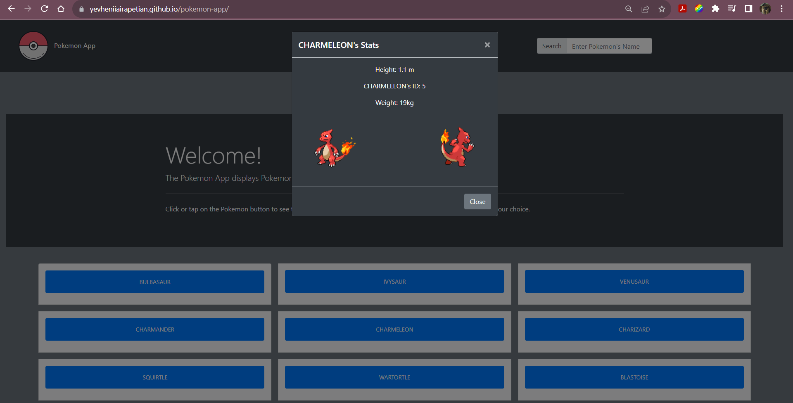
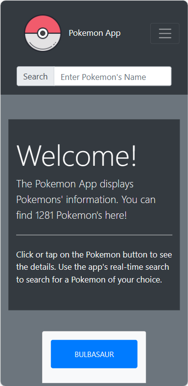
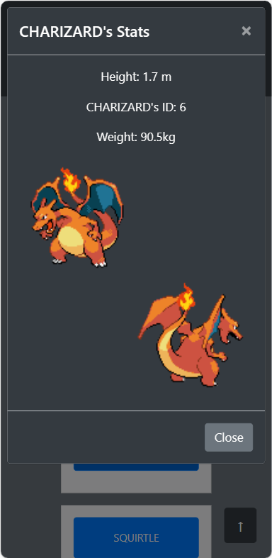
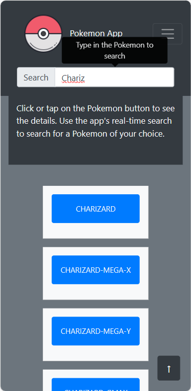

Click on the image and hold to zoom in.
Pokemon App is a web application, developed using HTML, CSS, Javascript, and Bootstrap. It provides users with information about Pokemon fetched from the Pokedex API. Users can access information about Pokemon ID, height, and weight, see a Pokemon's front and back image, and search for a Pokemon by name.
R3play was a required project I developed as part of my full-stack immersion course at CareerFoundry to demonstrate my mastery of web development using JavaScript and Bootstrap.
The project aimed to develop a fully-functioning app that I could add to my professional portfolio. The problem I wanted to solve was to build and style a web application by employing an external API and a popular CSS framework.
I used the Pokedex API as part of the project's required dependencies to supply the app with various information about Pokemon. For this purpose, Javascript promises were used to handle asynchronous requests and responses to/from the Pokedex API.
After finishing the logic part of the app, I began the stylization phase by incorporating Bootstrap as the project's required CSS framework. The task was to use Bootstrap's grid, classes, and components to implement the required functionality and responsiveness. Finally, I tested the app on various screens, devices, and operating systems using the device/system emulators.
Click on the image and hold to zoom in.
  4 weeks
The part requiring to use asynchronous Javascript was the most time-consuming, while the work on styling was relatively easy. Overall, it took me 1 month to complete the project which was around the average time spent. First, I had difficulties displaying the specific Pokemon information as described in the Pokedex documentation. Also, I had to troubleshoot the issue when data didn't display on the front end.
Nevertheless, this was a fun and relatively easy project to work on. I have enjoyed diving into the basics of Javascript by learning AJAX. It was also motivating to learn styling with the help of Bootstrap. I also quickly gained useful skills in working with Javascript promises and APIs, reading documentation, styling with CSS frameworks, and troubleshooting. Thankfully, my mentor and tutor assisted me during the project and I was able to apply the gained skills later on when implementing additional features to the app.
The Pokemon app was the first Full-Stack Immersion course project. When it was finished, I focused on enhancing my development skills, specifically diving into Node.js, Express, and APIs. Designing my own API was a useful and important step to further mastering the crucial back-end web development skills.
Ajax
External API
Javascript
Bootstrap
CSS3
Responsive design
HTML5
jQuery
Deploying a website
Role: Lead Developer
Tonny Ntambaazi: Creative Director
Nizar Triki: Software Engineering Manager